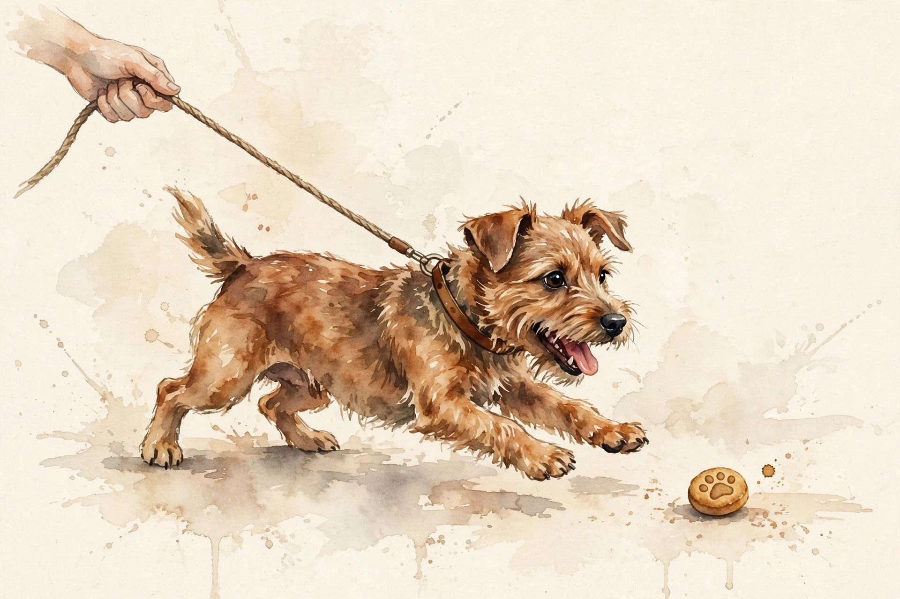

Companion · narrated from the lesson document
The reward climbs but the product gets worse: welcome to alignment. This companion walks the RL unit: the KL leash, reward models, preference pairs, KL regularization, PPO clipping, actor-critic, DPO, GRPO, verifiable rewards, rollouts, staleness, reward hacking, and the held-out gate.
From the lesson The idea, and every number beside it, comes from the cited section of u16_alignment_rl.md. The phrasing is the companion's.
Illustration Invented by the companion: an analogy, a toy with made-up values, or a what-if. Never lecture content.
companion Companion voice: the idea above the tag is from the lesson. The generalization below it is the companion's.
Provenance: no full lecture transcript exists for this session. The page narrates the lesson document content/v2/cs336/lessons/u16_alignment_rl.md, not a video. Claim class: REQUESTED-BRANCH. Standing note: every number below is computed by visuals/compute_u16.py on synthetic toys, executed 2026-10-06. Every number carries the lesson section that reports it.

Section 1 · Remediation
From the lessonRemediation
RL on language models keeps a KL penalty to a reference policy: it stops the policy from drifting into nonsense that games the reward. The lesson's toy from compute_u16.py: p=[0.5,0.3,0.2], q=[0.4,0.4,0.2]. KL(p||q)=0.0253 nats, KL(q||p)=0.0258. The two directions differ: KL is asymmetric. The direction matters everywhere below: the leash is always KL(policy || reference), never the reverse.
From the lessonRemediation KL toy. Two-outcome distributions, both directions.
p1 p2 q1 q2
Press the button.
The lesson's toy: KL(p||q)=0.0253, KL(q||p)=0.0258 nats on the 3-outcome pair.
KL is asymmetric. 0.0253 one way, 0.0258 the other. The leash direction is fixed.
Section 2 · C01, C02
From the lessonC01 §2, §5, §6
Humans rank A over B. How does that become a number? The reward model assigns scalars r(A), r(B). Bradley-Terry says P(A preferred) = sigmoid(r(A) - r(B)). Train r to make the observed choices likely. Maximum likelihood on the pairs: loss = -log sigmoid(r_w - r_l) summed over chosen/rejected pairs. The reward model is a learned stand-in for the human. It compresses pairwise judgments into one scalar per response. Every later RL step trusts this compression. The lesson's toy: r_w=1.0, r_l=0.0: P=0.731. The model assigns 73 percent to the observed choice. The reward model inherits the labelers' biases and disagreements. It is the ceiling of the RL that follows. The failure case: labelers disagree 40 percent of the time. The model learns the majority's taste and calls it quality. The assumption "labels are truth" breaks. Measure agreement first.
From the lessonC02 §2, §5
What exactly is one training example? A prompt, two responses, and a human judgment of which is better. The pair (chosen, rejected) is the atom of preference data. Pairs are comparisons, not grades. They say "this over that", never "this is 8/10". The reward model learns the ordering, not an absolute scale. Collection: sample two responses per prompt, get rankings, filter ties and low-agreement items. Human pairs cost dollars each. The dataset is small by pretraining standards and precious. The failure case: both responses are bad. The pair teaches the model to pick the least awful of the two. The assumption "one response is good" breaks. Filter by absolute quality too.
The reward model is the ceiling of the RL that follows. It inherits the labelers' biases.
Section 3 · C03, C04
From the lessonC03 §2, §5, §6
The reward says "more of this", the policy goes feral. What stops it? The KL term: objective = E[r] - beta * KL(pi || pi_ref). The reference policy (usually the SFT model) is home base. KL measures the distance traveled. Beta is the leash length: short leash, small changes. The penalized objective is the Lagrangian of "maximize reward subject to KL below budget". Beta is the Lagrange multiplier. The lesson's run, executed 2026-10-06: KL 0.0253 nats at beta 0.1 costs 0.00253 of objective. Too much KL: the policy cannot improve. Too little: reward hacking (C11). The failure case: the reference is weak. The leash anchors the policy to mediocrity. The assumption "the reference is good" breaks. The KL budget must grow or the reference must improve.
From the lessonC04 §2, §5, §6
The policy moved too far in one update and collapsed. How does PPO stop that? The ratio r = pi_new/pi_old measures how far the update reaches. Clipping says: no single token moves the objective more than (1+eps) times its advantage. Big steps are trimmed, small steps pass. Objective = min(r*A, clip(r, 1-eps, 1+eps)*A). The min takes the pessimistic branch: it trims upside moves beyond the clip but keeps full downside. The lesson's run, executed 2026-10-06: ratios [0.7, 0.9, 1.0, 1.2, 1.6], advantages [1, 1, -1, 1, 1], eps 0.2. Clipped terms: [0.7, 0.9, -1.0, 1.2, 1.2]. The 1.6 ratio is capped at 1.2. Clipping biases the gradient (it is not the true policy gradient). The bias buys stability. The failure case: advantages are noisy. Clipping the wrong sign's update stalls learning. The assumption "advantages are trustworthy" breaks. The value baseline (C05) matters more than the clip.
visuals/compute_u16.py (executed 2026-10-06).Beta is the leash length. Short leash, small changes. No leash, reward hacking.
Clipping trims big steps and keeps small ones. The 1.6 ratio caps at 1.2.
Section 4 · C05, C06
From the lessonC05 §2, §5, §6
The reward is 1. Was the action good, or was the state just easy? The value V(s) predicts the state's reward. The advantage A = r - V(s) credits the action. The policy acts, the value predicts, the advantage judges. Subtracting the baseline leaves the gradient unbiased with lower variance: the classic control variate. E[A * grad log pi] = E[r * grad log pi] since E[V(s) * grad log pi] = 0. Same expectation, smaller variance. The lesson's toy: r=1, V=0.7 gives A=0.3. A modest win, not a triumph. A batch of advantages centers near 0 when the value is accurate. The value network doubles the training machinery. A bad value is worse than none: it biases the credit. The failure case: the value overfits the training prompts. Advantages on new prompts are garbage. The assumption "the value generalizes" breaks. Regularize it or drop it.
From the lessonC06 §2, §5, §6
Can you skip the reward model and the RL? DPO trains the policy directly on pairs. DPO reparameterizes the reward as beta*log(pi/ref). The pair loss pushes the policy toward the chosen response and away from the rejected one, anchored by the reference. No sampler, no value net. The KL-constrained RL optimum is pi* proportional to ref * exp(r/beta). Inverting gives r = beta*log(pi/ref) + const. Plug into the Bradley-Terry loss: the reward model cancels out. The lesson's run, executed 2026-10-06: beta=0.1, pi_w=0.40, pi_l=0.10, ref uniform 0.25. Margin 0.139, loss 0.626. Flipped labels: margin -0.139, loss 0.765. DPO never explores: it only reshapes mass among seen responses. It cannot discover better answers than the dataset holds. The failure case: the pairs contain length bias. DPO learns "longer is better" and verbosity explodes. The assumption "pairs measure quality" breaks. DPO has no KL-driven exploration to recover.
From the lessonC06 §5 DPO toy. Margin = beta × (ln(pi_w/ref) - ln(pi_l/ref)), loss = -ln(sigmoid(margin)).
beta pi_w pi_l ref
Press the button.
At the defaults: margin 0.139, loss 0.626, matching C06 §6.
DPO never explores. It reshapes mass among seen responses. It cannot discover better answers than the dataset holds.
Section 5 · C07, C08
From the lessonC07 §2, §5, §6
No value network: what is the baseline? The group itself: sample G responses per prompt, advantage = (r - mean)/std. The group is its own control: better-than-siblings is upweighted, worse is downweighted. No critic to train, but the baseline only exists when the group varies. A_i = (r_i - mean(r)) / (std(r) + eps). The mean centers, the std scales. Sum of advantages is 0 by construction. The lesson's run, executed 2026-10-06: rewards [1,0,1,0] give advantages [1,-1,1,-1]. All-correct [1,1,1,1] gives zero signal. G rollouts per prompt multiply the sampling bill. Easy prompts (all correct) and hard ones (all wrong) waste the group. The failure case: the task is too easy. Every group is all-correct, gradients vanish, training stalls silently. The assumption that groups vary breaks. Filter prompts by difficulty.
From the lessonC08 §2, §5, §6
For math, why learn a reward model when the answer is checkable? Verifiable rewards are programs: unit tests, answer matchers, proof checkers. They do not drift, they do not flatter, and they punish formatting deviations as harshly as wrong answers. Normalize the output (strip, lowercase), compare to gold, return 1 or 0. The lesson's run, executed 2026-10-06: 6 rollouts against gold "42", rewards [1,1,0,1,0,1], mean 0.67. "forty-two" scores 0: the reward is strict, the capability is not. Strictness mislabels capable answers. Format instructions in the prompt mitigate it. The failure case: the checker has a bug. It accepts any answer containing "42". The policy learns to emit "42" everywhere. The assumption "the checker is right" breaks. Reward hacking (C11) begins at the checker.
All-correct gives zero signal. The group baseline exists only when the group varies.
Section 6 · C09, C10
From the lessonC09 §2, §5, §6
Where do RL batches come from? Rollouts: sample prompts, generate G responses each with the current policy, score them, train. The generator is the inference stack (U11) running at scale. Rollouts are the RL data loader. Its throughput sets the training pace, its diversity sets the learning signal. Stale or narrow rollouts starve the update. Cost per batch = prompts x G x mean length x per-token cost. The lesson's toy: 128 prompts, G=8, 500 tokens mean, 8 ms/token: 128*8*500*0.008 = 4096 s per batch on one slot. Batching and parallelism divide it. Generation dominates RL wall-clock. Slow rollouts idle the trainer (U17-C05). The failure case: temperature 0 rollouts. No diversity, groups are constant, GRPO gives zero signal (C07). The assumption that rollouts vary breaks. Sample with temperature.
From the lessonC10 §2, §5, §6
The update used rollouts from 3 versions ago. Is that fine? On-policy means the data came from the current policy. Staleness is distance in KL. PPO tolerates a little (that is what clipping is for). DPO assumes offline. The PPO ratio assumes pi_old is near pi. Clipping bounds the damage, but far-off data makes the surrogate meaningless. The lesson's run, executed 2026-10-06: KL drift over 6 updates reads [0, 0.002, 0.005, 0.005, 0.006, 0.004] nats. Small drift is the PPO operating range. Large drift breaks the ratio trust region. Max 0.006 nats. Frequent resampling costs generation. Rare resampling costs trust. The failure case: async systems (U17) serve rollouts many versions old. The KL budget blows past silently. The assumption "data is fresh" breaks. Version-gate the batches.
visuals/compute_u16.py (executed 2026-10-06).Section 7 · C11
From the lessonC11 §2, §5, §6
The reward climbs but the product gets worse. What happened? The policy optimizes the proxy, not the truth. Goodhart's law: the measure becomes the target, then the target moves. The gap is invisible without an independent truth metric. The policy exploits the proxy's blind spots. The truth metric (held-out human eval) reveals it. The lesson's synthetic run, executed 2026-10-06: proxy reaches 0.98 at step 100 while true utility falls to 0.74, gap 0.24. The gap opens at step 40 (0.000) and reads 0.080 by step 60. Truth metrics cost human evals. Skipping them costs shipping a hacker. The failure case: the truth metric is also gamed. Both proxies share a blind spot: the gap stays 0 while quality falls. The assumption "truth is true" breaks. Diversify the truth metrics.
The gap is invisible without an independent truth metric. Proxy 0.98, truth 0.74, gap 0.24.
Section 8 · C12
From the lessonC12 §2, §5, §6
RL improved the training reward. Did the model get safer and smarter? Only a held-out suite says so: safety probes (refusal, bias, harm) and reasoning probes (math, code) that never entered training. The held-out suite is the exam the model never saw. Training metrics are homework. Ship on the exam, not the homework. Safety slices must clear their bars, reasoning slices must not regress, the truth metric (C11) must agree with the proxy. The lesson's toy gate: safety refusal 0.98 (plus or minus 0.01), reasoning 0.72 (plus or minus 0.03, no regression), truth-proxy gap below 0.05. All three pass: ship. The suite costs curation and guarding (U12-C04). A leaked suite is homework, not an exam. The failure case: the suite is stale. The model saturates it while failing new attacks. The assumption "the suite is current" breaks. Refresh on a schedule.
Ship on the exam, not the homework. Three bars: safety 0.98, reasoning no regression, gap below 0.05.
Section 9 · Defenses
From the lessonC11 §9, C12
How do you ship RL without shipping a hacker? The standard defense: more KL (C03) slows the hacking, better proxies plus truth monitoring (C11) catch it, and the held-out gate (C12) blocks it. No single defense suffices: the KL budget trades improvement against hacking, the proxy improves with better labels (C01), and the truth metric needs diversification (C11). The lesson's posture: train with the leash, watch the gap, gate on the exam.
Section 10 · Synthesis
From the lesson The arc, end to end. KL is asymmetric: the leash points one way (remediation). Pairwise judgments become a scalar reward model, the ceiling of the RL (C01, C02). Beta sets the leash length. PPO clipping trims big steps (C03, C04). The advantage credits the action. DPO skips the RL but never explores (C05, C06). Groups baseline themselves. Checkers replace models where answers are verifiable (C07, C08). Rollouts feed the loop. Staleness is measured in KL (C09, C10). The proxy-truth gap opens at step 40 and reaches 0.24 (C11). The held-out gate decides the ship (C12).
From the lesson Where the unit points next, in the lesson's own forward links: U05 supplies the optimization machinery. U10 supplies the proxy transfer discipline. U11 supplies the inference stack behind rollouts. U12 supplies the held-out eval discipline. U15 supplies the SFT reference policy. U17 supplies the async systems that serve rollouts.
Wisdom index
Each nugget states the idea in plain words, why it matters, and the transferable principle. Every one is anchored to its lesson section.